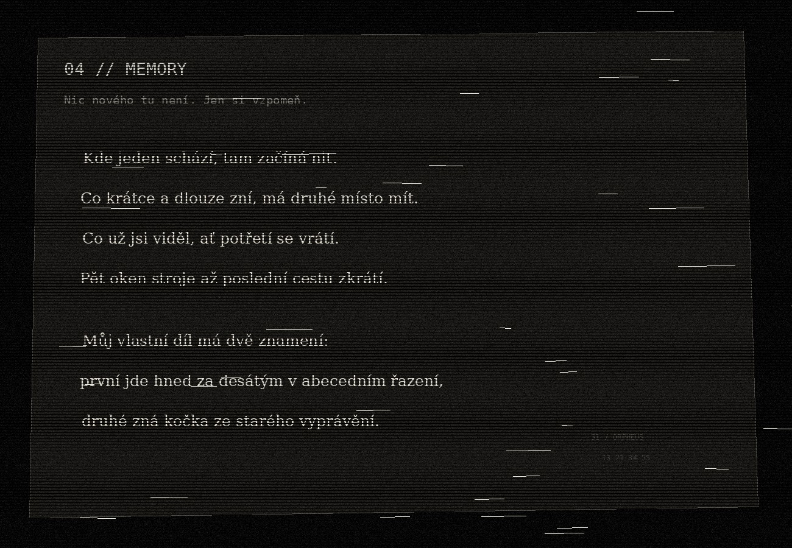

cryptic playground
by Alza.czOBSERVE / THINK / CONNECT / SOLVE
04 // META
MEMORY
Tady získáš poslední část i pořadí všech čtyř výsledků. Text odkazuje na runy, které už znáš.
← BACK
tap / click to inspect full resolution
Čti význam. Ne zdrojový kód.